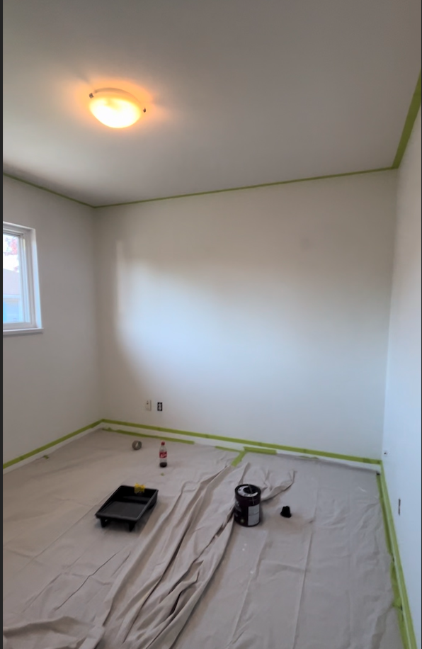
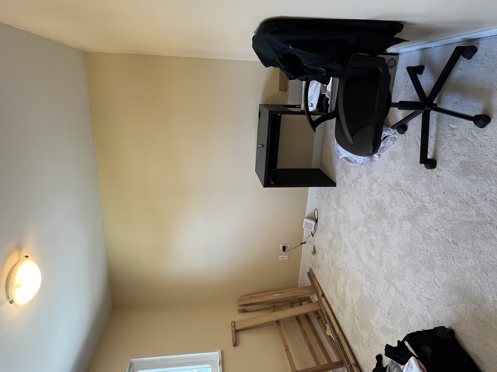
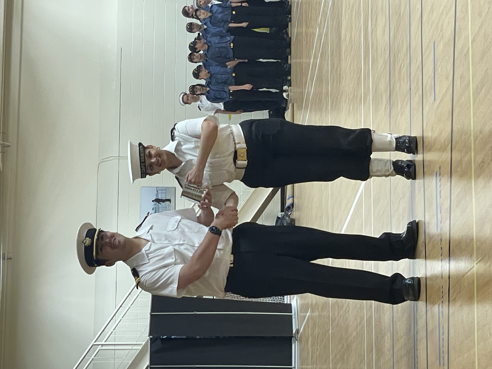
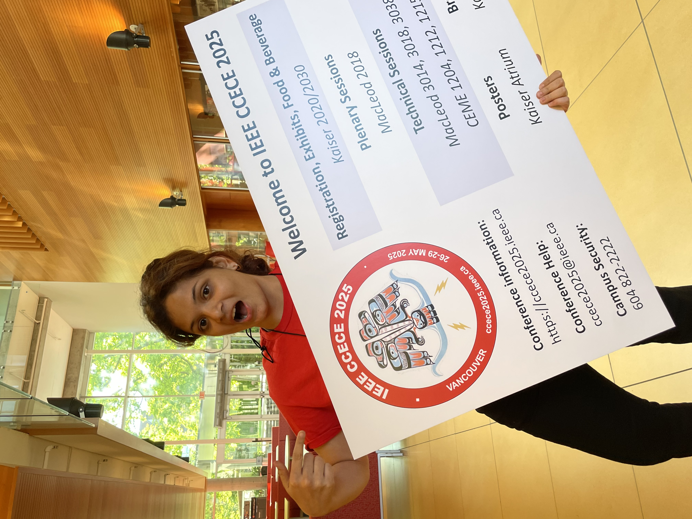
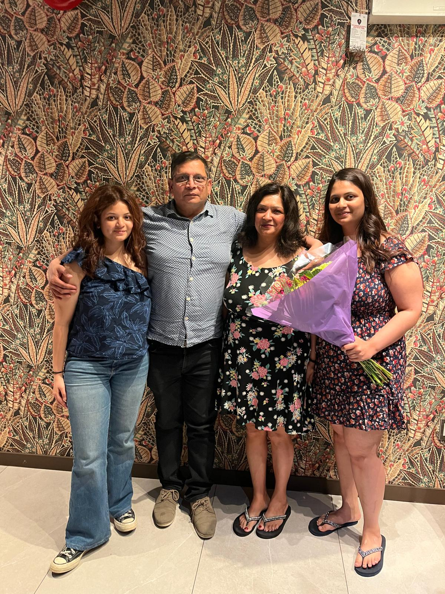

May
An Endless Month Filled with Learning & Celebrations
The end of April, I began a goal I had been wanting to complete since I was in Grade 10, and that was a website! I embarked on the journey to create a website from scratch, and finally made it! Along the way, I decided to make it even more personal by making it Netflix-themed. One of my goals is to work at Netflix one day. This came from my love for cinema, and TV shows when I started recognizing how well the algorithm worked for me in recommending me TV shows/movies.
This was probably my busiest month of the year. From painting the walls of my new house, to graduating from the cadet program, and volunteering at a conference. It was VERY hectic.
From One Wall to the Whole House…
What started as a simple mission between my sister and me — just repainting our bedroom walls — quickly turned into a full-house makeover. After moving into a new home, we noticed scuff marks and patches on the walls and thought, why not freshen things up a bit? I had some free time, and after binging way too many ASMR painting videos, I figured this was the perfect moment to channel that energy into something productive.
After we painted our first wall white, we got way too confident. Next thing you know, we were experimenting with colors, textures, and even wallpapers. Our DIY painting project spiraled into a two-week adventure. And though it took a surprising amount of effort, sweat, and trial-and-error (seriously — wallpaper is not as easy as it looks), we wrapped it up with a real sense of accomplishment.


Before & After of my room - still not complete BTW!
You might be wondering why take on a project like this in my only three weeks off before summer school? The truth is, I thrive when I’m busy. There’s so much to learn, create, and experience. And I believe if you can take initiative on the small things, you build the mindset and to take on bigger ones too.
So, if you’ve been thinking about repainting your room; just go for it. Use the resources availble, spend a little, and make something your own. It’s worth it. 🙂
Sylvie Brought Me Water
In the middle of all the house chaos, I officially aged out of the cadet program! I joined back in October 2019 as a shy 13-year-old, unsure of what I was getting into, fueled by my father’s passion from the Indian Navy. And now, after years of showing up, learning, and growing, I can say with confidence: I got so much out of it.

Getting my mug!
The cadet program truly has something for everyone. It took me a while to find what I loved most and to be honest, I will ALWAYS wish I had explored even more. But with the opportunities I did take, I’m incredibly proud. By the end, I earned the rank of CPO2 and contributed to my corps in meaningful ways, especially through social media. The weeks I spent at HMCS Quadra as a Petty Officer of Professional Development at camp were truly unforgettable. Someday, I’d love to go back and womp-womp with my friends and beg sylvie for water 😉
I met amazing friends, gained real-life skills, and created memories I’ll always hold close. If you're in the program (or thinking of joining), I hope you make the most of it. Show up. Stay curious. It’s worth it.
And of course, a huge shoutout to my second favorite dessert spot, Chocolate Favoris, for opening just in time on May 3rd and being the perfect place to celebrate my age-out. Love you forever!
CCECE or a Eating Week
To end an already eventful month, I volunteered at the Canadian Conference for Electrical and Computer Engineering (CCECE) hosted by IEEE and honestly, it was one of the best experiences of my life.
Sure, the endless supply of warm scones, ice-cold Coca-Colas, and amazing food didn’t hurt but what made it truly unforgettable was that it gave me my first real glimpse into the professional world of my industry. It was the moment everything I’ve been studying started to feel worth it.

Setting down the conference!
Here’s what the experience taught me, straight from my chaotic Notes app (decipher at your own risk):
Today is the last day i am volunteering at the CCECC 2025 conference. apart from being carefully taken care of and well fed, this was probably one of my favorite things i’ve ever done. It was th best learning opportunity for me. I have learned so much by attending just a couple of events. In the mentorship forum:GALA EVENT:
- met two icons (dr ward, ms simay)
- rekindled passion for solar energy
- women can do everything
- masters is best learned after working - DO TO LEARN, then learn again = stores better. regardless of study habits
- you can do anything - man made prosthetic leg for his son!
- there’s so much to engineering from phd to professor to industry to consulting to entrepreneurship, let’s find me calling
WOMEN IN ENGINEERJNG PANEL:
- amazing service work, papers i will never understand but motivated individuals
- age is just a number - duff jones: going back to school at 33 to go a complete switch in careers and being successful in each way
- people come from different backgrounds with fat too many obstacles yet still excel
- UBC engineering traditions are crazy (Lady Godiva)
- dr ward is a true icon
But through these events the most important thing I got was MOTIVATION. Motivation to do something, somethiny good and aomething of my own. And it can’t just be anything, it should be something I love and am passionate about, because do = learn.
As a first year student that passion dies down becuz of how stressful the workload is and im sure everyone can agreee. but this gave me a oook into being successful and doing something while also contributing to my field in different ways by being involved in things like IEEE.
So now, it’s time to begin working on my own projects and doing things that help people, already my mind is generating ideas - be it good or not.
And while those were my most significant learning events…
I can’t forget to include the celebrations that happened along the way. Happy Mother’s Day to my amazing mommy, and happy graduation to my sister. It was a great month!


Mother's Day (left) & Sis Grad (right)!